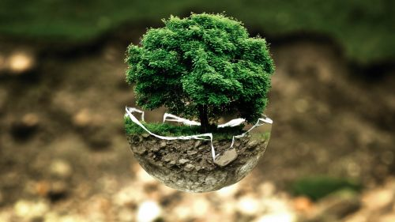

El Medio Ambiente¿Qué es el medio ambiente?El medio ambiente es el espacio en el que se desarrolla la vida de los organismos y que permite su interacción. Está conformado por seres vivos (factores bióticos), por elementos sin vida (factores abióticos) y por elementos artificiales creados por el hombre. Cuando se habla de factores bióticos se hace referencia a todos los seres vivos que viven en un ambiente (las bacterias microscópicas, los hongos, la flora, la fauna, los seres humanos) y las interacciones entre ellos; por su parte, los factores abióticos son aquellos que carecen de vida pero determinan el espacio físico del ambiente (como el aire, el suelo y el agua) y resultan esenciales para la subsistencia de los organismos vivos. Entre los elementos artificiales se incluye a todos aquellos creados por el ser humano, como la urbanización, la cultura, las tradiciones. La suma de estos valores naturales, culturales y sociales en un momento histórico y en un lugar en particular constituyen el medio ambiente. Importancia del medio ambiente. Todos los organismos obtienen del medio ambiente todos los elementos que necesitan para vivir: desde el aire y el agua, hasta el refugio y el alimento que les permite crecer, desarrollarse y obtener energía. Mantener el equilibrio del medio ambiente es fundamental para mantener la vida en la Tierra tal como la conocemos. Además, los seres humanos utilizan una gran cantidad de recursos naturales del medio para cubrir sus necesidades como vestimenta, alimento y objetos de uso cotidiano entre otros ejemplos. Por eso el ser humano debe conocer y cuidar sus interacciones con el medio ambiente para gestionar de manera sostenible los recursos naturales que permiten su crecimiento económico y su desarrollo. La fauna y la flora son de vital importancia para el medio ambiente ya que poseen una interdependencia que posibilita el equilibrio de las especies y el desarrollo de la biodiversidad. La supervivencia del hombre depende en gran medida de las interacciones y el uso consciente de la flora, la fauna y los recursos naturales, así como del desarrollo de las relaciones sociales, políticas y económicas que forman parte de su medio. Cuando el ser humano cuida los factores abióticos (por ejemplo, los ríos de una región) y los factores bióticos (como los árboles de un bosque) mantiene y preserva el futuro de su especie, el futuro del resto de los organismos y el de las generaciones futuras. El espacio donde se desarrolla la vida en este momento con todos los seres vivos y sus componentes naturales. Ese entorno que rodea condicionando la vida de la sociedad y que está siendo modificado cada día por actividades inconscientes del hombre. Es ese hogar conocido como Medio Ambiente. Por esta razón, el hombre debe comprender, que depende hoy más que nunca de este sistema para la supervivencia en el planeta. Ya que el mismo brinda cantidades de servicios ambientales para el desarrollo social, económico y cultural. En este sentido, la importancia del medio ambiente se encuentra en que es hábitat para la humanidad, la diversidad biológica y todo lo que existe hoy en día en este planeta tierra. Sin duda, del mismo se obtiene el aire, agua, suelo, plantas, animales y lo más importante como los alimentos y las materias primas para fabricar todo lo que se utiliza en la actualidad. Por consiguiente, la importancia del medio ambiente es fundamental. Ya que ofrece todos sus recursos naturales que necesita el ser humano para alimentarse, vestirse, construir casas, tener luz, transportarse, entre muchos otros beneficios para poder existir. Todo lo que se ve alrededor se obtiene directa o indirectamente del ambiente. Por lo cual todas las sociedades deben garantizar su cuidado para su existencia y hacer uso racional de todos sus recursos. ¿Qué es la contaminación ambiental?El planeta nos recuerda continuamente, y cada vez de forma más recurrente, que si alteramos su equilibrio, las consecuencias son devastadoras a través de sequías, mega incendios, inundaciones, pérdida de la biodiversidad y desastres naturales cada vez más feroces. El cambio climático ya es una realidad y miles de personas, animales y plantas sufren sus efectos.La contaminación no es más que un aliciente que hace que la crisis climática avance sin control. Nos referimos a contaminación ambiental al ingreso de sustancias químicas nocivas en un entorno determinado. Este fenómeno repercute en el equilibrio de dicho entorno y lo convierte en un ambiente inseguro. El medio ambiente y sus ecosistemas sufren de manera directa los perjudiciales efectos. Y es que la contaminación ambiental es una alternación negativa del estado natural de los seres vivos que habitan el planeta. Las causas de este tipo de contaminación dependen de varios agentes que varían según el ecosistema al que afecten. Mire este video: |